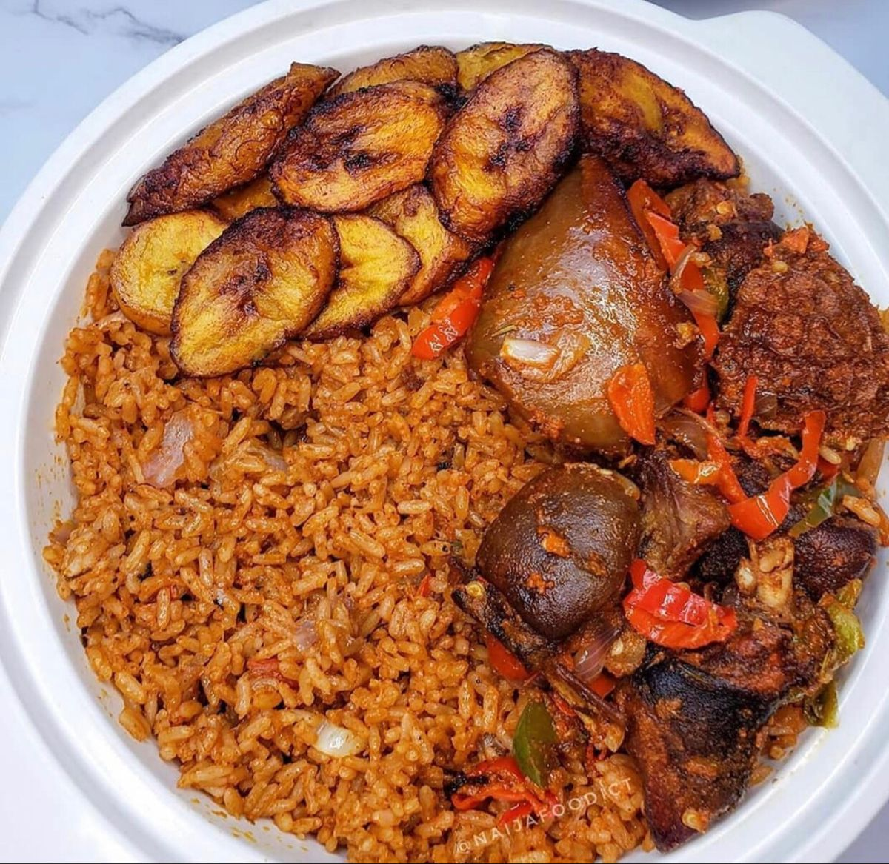

Nigerian Jollof Rice with Chicken and Fried
Plantains

Description
This Nigerian dish is popular in households for its perculiarity in bringing a sweet
aromatic flavor
out of rice. Chicken is first sauteed on the stove top to produce a
wonderful aromatic base for the rice.
For an extra special and authentic touch,
serve jollof rice with fried plantains.
Ingredients
Chicken:
- 2 pounds chicken drumasticks
- ½ large onion, diced
- 1 (2 inch) piece frech ginger root, peeled and thinly sliced
- 2 cubes chicken bouilon, crushed
- 2 cloves garlic, diced
- 1 tablespoon curry powder
- freshly ground black pepper
- 1 pinch cayenne pepper
- 1 cup water
Rice:
- 3 cups parboiled rice
- 1 teaspoon salt, or to taste
- 3 tablespoons vegetabe oil
- 1 diced large onion
- 1 (14 ounce) can tomato sause
- 1 (14 ounce) can coconut milk
- 1 teaspoon herbes de Provence
- ½ teaspoon ground black pepper
- 1 (10 ounce) package frozen mixed vegetables (carrots, corn, peas)
Plantains:
- 4 ripe plantains, peeled and cut diagonally into 1/2-inch slices
- ½ cup canola oil for frying
Steps
-
Place chicken drumsticks in a large Dutch oven over medium heat.
Add 1/2 onion, ginger, crushed bouillon cubes, garlic, curry powder,
1 teaspoon herbes de Provence, black pepper, and cayenne pepper.
Mix well. Cook until chicken starts sticking to the bottom, about 5
minutes. Pour in water, mix, cover the pot, and bring to a gentle
simmer;
cook for 15 minutes. Remove from heat.
-
Transfer chicken to a baking dish using a slotted spoon. Strain cooking
liquid through a fine-mesh sieve. Reserve 1 1/2 cups liquid. Discard solids.
- Preheat oven to 400 degrees F (200 degrees C).
- Bake chicken in the preheated oven until no longer pink in the middle and the
juices run clear, about 30 minutes. An instant-read thermometer inserted into
the
thickest part should read 165 degrees F (74 degrees C).
-
Heat 3 tablespoons vegetable oil in a large pot over medium-low heat and cook
1/2 onion until soft and translucent but not browned, about 5 minutes. Add
tomato sauce; cook and stir until slightly thickened and infused into the oil, 5
to 7 minutes.
-
Stir reserved chicken broth, coconut milk, 1 teaspoon herbes de Provence, salt,
and pepper into the pot. Bring to a simmer; add rice. Cook, stirring often, until
rice is almost tender, 15 to 20 minutes. Add frozen vegetables and continue
cooking until rice is tender and creamy, about 5 minutes.
-
Heat 1/2 cup of canola oil in a nonstick pan over medium heat. Add plantains
and fry on both sides until golden and crispy, about 2 to 3 minutes per side.
Drain on paper towels. Garnish jollof rice with fried plantains and serve with
chicken.